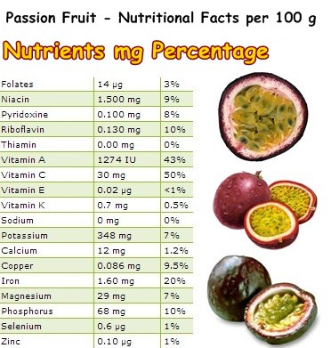

Caractéristiques du fruit de la passion
Excellente source de fibres alimentaires ;
Pouvoir antioxydant ;
Peu calorique ;
Bonne source de vitamine C et de fer ;
Saveur acidulée unique.
aleurs nutritionnelles et caloriques des fruits de la passion
Le fruit de la passion possède un profil nutrition unique en son genre. Avec 101 kcal pour 100g, il fait partie des fruits relativement caloriques. Toutefois, cette teneur en calories est à relativiser au vu des petites quantités consommées la plupart du temps. Le fruit de la passion contient un peu plus de 10% de glucides et près de 7% de fibres alimentaires, ce qui est excellent. D’un point de vue micronutriments, il est une excellente source de fer et de vitamine C antioxydante. À noter que cette combinaison est très intéressante puisque la présence de vitamine C dans le fruit de la passion augmente naturellement l’absorption intestinale du fer lui aussi présent dans le fruit.
Pour 100 g de fruits de la passion crus :
Les bienfaits du fruit de la passion :
Plusieurs études épidémiologiques ont démontré qu’une consommation élevée de légumes et de fruits diminuait le risque de maladies cardiovasculaires, de certains cancers et de diverses maladies chroniques. La présence d’antioxydants dans les légumes et les fruits pourrait jouer un rôle dans cette protection. Peu de recherches cliniques ont étudié les effets de la consommation spécifique des fruits de la passion. Cependant, l’utilisation de certains suppléments extraits de la pelure ou du jus du fruit a donné des résultats intéressants. Voici les applications les plus prometteuses.
Asthme :
Une petite étude (43 personnes) a montré que la consommation régulière d’un supplément composé d'extraits de pelure de fruit de la passion diminuait les symptômes de l’asthme (diminution de la prévalence des crachats, de la toux et de l’essoufflement). Des études devront être effectuées sur un nombre plus important de sujets pour confirmer l’efficacité de ce traitement.
Hypertension artérielle :
Des recherches ont révélé qu’un supplément provenant d’extrait de pelure de fruit de la passion permettait d’améliorer la pression artérielle systolique et diastolique, sans aucun effet indésirable. Le supplément administré était composé d’un mélange de flavonoïdes, d’acides phénoliques et d’anthocyanines, des composés actifs du fruit de la passion.
Santé articulaire:
Un autre type de supplément, extrait de la pelure du fruit de la passion, améliorerait la fonction physique et diminuerait la douleur et la raideur chez des patients atteints d’arthrose du genou. Les effets bénéfiques rapportés seraient attribuables aux propriétés antioxydantes et anti-inflammatoires de la pelure du fruit de la passion. Davantage d’études en ce qui concerne l’efficacité et l’innocuité d’un tel supplément seront cependant nécessaires avant de pouvoir émettre des recommandations.
Cancer:
Des chercheurs ont observé in vitro qu’un mélange d’antioxydants provenant du jus de fruit de la passion pouvait diminuer la croissance de cellules cancéreuses et augmentait l’activité d’un enzyme favorisant la destruction de ces cellules
Pouvoir antioxydant:
Le fruit de la passion contient plusieurs types d’antioxydants, des composés qui permettent de neutraliser les radicaux libres du corps et de prévenir ainsi l’apparition des maladies cardiovasculaires, de certains cancers et de diverses maladies chroniques.
Les principaux antioxydants du fruit de la passion sont les anthocyanines, plus particulièrement de la cyanidine. Ces composés, qui sont des pigments, donnent une couleur prononcée aux aliments. Ils auraient des propriétés bénéfiques quant à la prévention du cancer (par exemple, la diminution de la formation de tumeurs et la diminution de la croissance des cellules cancéreuses). Ces propriétés n’ont toutefois pas été étudiées directement chez l’humain.


email:diazealaeeddine.com
tel:0651465119